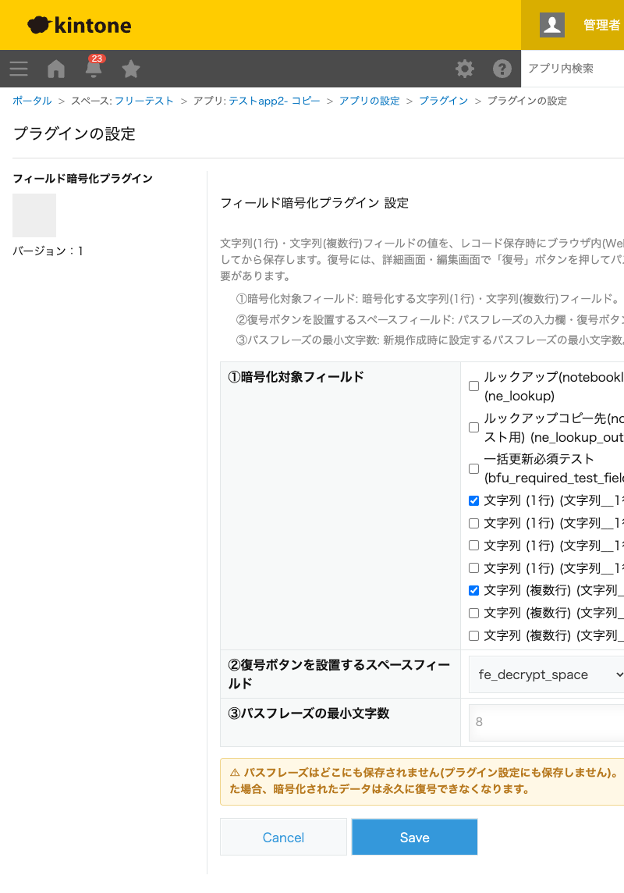

GovAppsプラグイン 安全性を確認できる無料kintoneプラグイン集
文字列(1行)・文字列(複数行)フィールドの値を、レコード保存時にブラウザ内(Web Crypto API)で AES-256-GCM暗号化してから保存するプラグインです。kintoneのREST APIは保存されている生の値を そのまま返すため、画面表示を隠すだけの「マスキング」ではAPI越しに値が読めてしまいますが、 このプラグインは値そのものを暗号文に変換して保存するため、REST APIからも平文を読み取れません。 復号にはパスフレーズの入力が必要で、パスフレーズ自体はどこにも保存されません。
フィールドの表示・非表示やアクセス権の設定は画面上の閲覧を制御できますが、REST APIやAPIトークンを持つ第三者アプリからは通常どおり値が読めてしまいます。このプラグインで暗号化したフィールドは、REST API経由でも暗号文(意味の無い文字列)しか取得できません。
詳細画面・編集画面では通常「🔒 暗号化されています」というマスク表示になり、正しいパスフレーズを入力した人だけがその場で復号して内容を確認・編集できます。パスフレーズを知らない閲覧者には内容が一切見えません。
PC画面ではスペースフィールドに設置したフォームでパスフレーズを入力します。モバイル画面では画面下から迫り上がるボトムシート形式のUIでパスフレーズを入力でき、狭い画面でも操作しやすくなっています。
新規作成画面でパスフレーズを設定すると、対象フィールドが保存時に自動で暗号化されます。対象フィールドが空欄のままならパスフレーズの入力は不要です。パスフレーズは1レコードにつき1つで、新規作成時に設定したパスフレーズが以後もそのレコードの唯一の正しいパスフレーズになります(変更する機能はありません)。パスフレーズを紛失した場合、暗号化されたデータは復号する手段がなく、永久に読めなくなります。パスフレーズの管理は利用者ご自身の責任で行ってください。
kintoneセキュアコーディングガイドラインに沿って実装時にチェックしています。特に重要な点は次のとおりです。
kintone.plugin.app.setConfig()・localStorage・Cookie・kintoneのいずれのフィールドにも一切保存しません。存在するのはパスワード入力欄の一時的な値と、編集画面を開いてから保存するまでの間だけ有効なメモリ上の状態のみです。extractable: falseで生成しており、鍵オブジェクトから生の鍵データを取り出すことはできません。暗号化のたびに新しいIV・saltを生成し、同一鍵でのIV使い回しが発生しないことをユニットテストで確認しています。innerHTMLは一切使用していません)。詳細な確認項目・確認日は下記GitHubのチェックリストに全項目を掲載しています。

このプラグインはREST API・kintone.api()を一切使用しません。暗号化・復号処理はすべて
ブラウザ内蔵のWeb Crypto APIのみで完結するため、レコードの保存・閲覧に伴うAPI実行数への影響は
ありません。